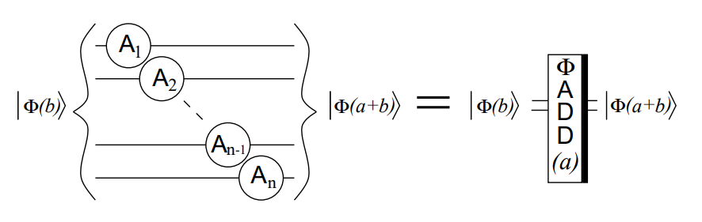

量子计算
前置
狄拉克符号
一般使用\(\ket{x}\)来表示第\(x\)位为\(1\)的，长度为\(2^n\)的单位向量，\(n\)是量子比特的位数
具体长成这样：
用\(\ket\phi= \frac1{\sqrt{2^n}}\sum_{x=0}^{2^n-1}{\ket{x}}\)来表示一个量子叠加态
张量积
两个向量的张量积等于一个向量中的每个值数乘另一个向量张成的一个大向量
\([1,2]\otimes [3,4]=[1\times 3,1\times 4,2\times 3,2\times 4]=[3,4,6,8]\)
注意，如果一个矩阵\(H\)秩为\(2\)，那么他的\(n\)次张量积\(H^{\otimes n}\)秩为\(2^n\)
相对黑盒
介绍
这个问题假设一个\(n\)位输入的黑盒，其计算函数为\(f[0,1]^n \to 0,1\)
如果对所有\(x\in[0,2^n-1]\)都有\(f(x)=0\)或\(f(x)=1\)，则\(f(x)\)位常数函数
如果有一半\(x\)表现为\(f(x)=0\),另一半为\(f(x)=1\)，则\(f(x)\)为对称函数
我们要判断\(f(x)\)类型，经典算法需要\(2^n\)次计算，而量子算法可以做到只需\(1\)次操作，实现了指数级加速
\(U_f\)
这是一个幺正操作，他可以把目标态反转
例如，将\(\ket{11}\)反转的\(4\times4\)\(U_f\)算子如下：
算法
定义一个初态\(\ket0^n\)
从一个初态开始进行操作
首先将\(n\)个量子位的Hadamard变换\(H^{\otimes n}\)作用于初态，得到叠加态 \(\(\ket\phi= \frac1{\sqrt{2^n}}\sum_{x=0}^{2^n-1}{\ket{x}}\)\)
再将\(U_f\)作用在叠加态上，得到
由于\(f(x)\)取值只有\(0,1\)，所以这个式子表示目标态被反转
再使用\(H^{\otimes n}\)，得到 $$ \ket\phi= \frac1{\sqrt{2^n}}\sum_{x=0}^{2^n-1}(-1)^{f(x)}\frac1{\sqrt{2^n}}\sum_{y=0}^{2^n-1}(-1)^{x\cdot y}\ket y$$
这里其实是对每个\(\ket x\)作用\(H^{\otimes n}\), 这个\((-1)^{x\cdot y}\)是由于\(H^{\otimes n}\)的具体长相为\(1,-1\)序列导致，读者可以手动模拟一下具体计算过程
此时，测量前\(n\)个量子位，如果状态为\(\ket{00\cdots 0}\)则\(f(x)\)为常数函数，否则为对称函数
- 注：其实矩阵的运算在经典计算机上是\(O(N^3)\)的，但是量子计算机中的基本门操作可以做到更快, 比如\(O(1)\), 具体原理先不讲，也不会
code:
#include<bits/stdc++.h>
using namespace std;
const int N=160;
const double sqrt2=sqrt(2),pi=acos(-1.0);
typedef double db;
int T,n,m;
int g[N];
db theta,delta;
mt19937 rnd(time(0));
template<typename T> struct Matrix{
T a[N][N];
int n,m;
Matrix(int n,int m):n(n),m(m){
for(int i=0;i<n;++i)
for(int j=0;j<m;++j) a[i][j]=0;
}
Matrix(){
n=2,m=2;
for(int i=0;i<n;++i)
for(int j=0;j<m;++j) a[i][j]=0;
}
T cal(){
T t=0;
for(int i=0;i<n;++i)
for(int j=0;j<m;++j) t+=a[i][j]*a[i][j];
return t;
}
void print_matrix(){
for(int i=0;i<n;++i){
for(int j=0;j<m;++j) cout<<a[i][j]<<" ";
cout<<endl;
}
}
};
template<typename T> Matrix<T> operator *(Matrix<T> A,Matrix<T> B){
int n=A.n,m=A.m,p=B.m;
Matrix<T> C=Matrix<T>(n,p);
for(int i=0;i<n;++i){
for(int j=0;j<p;++j){
for(int k=0;k<m;++k) C.a[i][j]+=A.a[i][k]*B.a[k][j];
}
}
return C;
}
typedef Matrix<db> mat;
mat a,H,U,tmp;
void cons(int n){
if(n==1){
H.a[0][0]=H.a[0][1]=H.a[1][0]=1.0/sqrt2,H.a[1][1]=-1.0/sqrt2;
return;
}
cons(n-1);
for(int i=0;i<(1<<(n-1));++i){
for(int j=0;j<(1<<(n-1));++j){
tmp.a[i][j]=H.a[i][j];
}
}
for(int i=0;i<(1<<(n-1));++i){
for(int j=(1<<(n-1));j<(1<<n);++j){
tmp.a[i][j]=H.a[i][j-((1<<(n-1)))];
}
}
for(int i=(1<<(n-1));i<(1<<n);++i){
for(int j=0;j<(1<<(n-1));++j){
tmp.a[i][j]=H.a[i-(1<<(n-1))][j];
}
}
for(int i=(1<<(n-1));i<(1<<n);++i){
for(int j=(1<<(n-1));j<(1<<n);++j){
tmp.a[i][j]=-H.a[i-(1<<(n-1))][j-(1<<(n-1))];
}
}
for(int i=0;i<(1<<n);++i)
for(int j=0;j<(1<<n);++j) H.a[i][j]=tmp.a[i][j]/sqrt2;
}
void init(int n,int t){
a=mat(1<<n,1);
H=U=tmp=mat(1<<n,1<<n);
a.a[0][0]=1;
for(int i=0;i<(1<<n);++i) U.a[i][i]=1;
if(t){
for(int i=0;i<(1<<n);++i) g[i]=i;
shuffle(g,g+(1<<n),rnd);
for(int i=0;i<(1<<n-1);++i) U.a[g[i]][g[i]]=-1;
}
cons(n);
}
void solve() {
cin>>n>>m;
init(n,m);
a=H*a;
a=U*a;
a=H*a;
a.print_matrix();
}
int main() {
solve();
return 0;
}
当\(f(x)=0\)时，程序输出\(1 0 0 0 0 0 0 0\), 即\(\ket {00\cdots 0}\)
当\(f(x)\not =0\)时，则程序不会输出\(\ket {00\cdots 0}\)
Grover
只需要在黑盒的基础上在添加两步
code:
#include<bits/stdc++.h>
using namespace std;
const int N=160;
const double sqrt2=sqrt(2),pi=acos(-1.0);
typedef double db;
int T,n,m;
//int f[N][N],g[N],a[N],H[N][N],U[N][N],M[N][N],tmp[N+N][N+N];
int g[N];
db theta,delta;
mt19937 rnd(time(0));
template<typename T> struct Matrix{
T a[N][N];
int n,m;
Matrix(int n,int m):n(n),m(m){
for(int i=0;i<n;++i)
for(int j=0;j<m;++j) a[i][j]=0;
}
Matrix(){
n=2,m=2;
for(int i=0;i<n;++i)
for(int j=0;j<m;++j) a[i][j]=0;
}
T cal(){
T t=0;
for(int i=0;i<n;++i)
for(int j=0;j<m;++j) t+=a[i][j]*a[i][j];
return t;
}
void print_matrix(){
for(int i=0;i<n;++i){
for(int j=0;j<m;++j) cout<<a[i][j]<<" ";
cout<<endl;
}
}
};
template<typename T> Matrix<T> operator *(Matrix<T> A,Matrix<T> B){
int n=A.n,m=A.m,p=B.m;
Matrix<T> C=Matrix<T>(n,p);
for(int i=0;i<n;++i){
for(int j=0;j<p;++j){
for(int k=0;k<m;++k) C.a[i][j]+=A.a[i][k]*B.a[k][j];
}
}
return C;
}
typedef Matrix<db> mat;
mat a,H,U,M,tmp;
void cons(int n){
if(n==1){
H.a[0][0]=H.a[0][1]=H.a[1][0]=1.0/sqrt2,H.a[1][1]=-1.0/sqrt2;
return;
}
cons(n-1);
for(int i=0;i<(1<<(n-1));++i){
for(int j=0;j<(1<<(n-1));++j){
tmp.a[i][j]=H.a[i][j];
}
}
for(int i=0;i<(1<<(n-1));++i){
for(int j=(1<<(n-1));j<(1<<n);++j){
tmp.a[i][j]=H.a[i][j-((1<<(n-1)))];
}
}
for(int i=(1<<(n-1));i<(1<<n);++i){
for(int j=0;j<(1<<(n-1));++j){
tmp.a[i][j]=H.a[i-(1<<(n-1))][j];
}
}
for(int i=(1<<(n-1));i<(1<<n);++i){
for(int j=(1<<(n-1));j<(1<<n);++j){
tmp.a[i][j]=-H.a[i-(1<<(n-1))][j-(1<<(n-1))];
}
}
for(int i=0;i<(1<<n);++i)
for(int j=0;j<(1<<n);++j) H.a[i][j]=tmp.a[i][j]/sqrt2;
}
void init(int n,int m){
a=mat(1<<n,1);
H=U=M=tmp=mat(1<<n,1<<n);
a.a[0][0]=1;
for(int i=0;i<(1<<n);++i) g[i]=i;
shuffle(g,g+(1<<n),rnd);
for(int i=0;i<(1<<n);++i) U.a[i][i]=1,M.a[i][i]=-1;
//U.a[(1<<n)-1][(1<<n)-1]=-1;
cout<<"we need to find: ";
for(int i=0;i<m;++i) U.a[g[i]][g[i]]=-1,cout<<g[i]<<" ";
cout<<endl;
M.a[0][0]=1;
cons(n);
}
void Grover(int t){
a=U*a;
a=H*a;
a=M*a;
a=H*a;
a.print_matrix();
delta+=2.0*theta;
cout<<"!"<<a.a[g[0]][0]*sqrt(m)<<" "<<sin(delta)<<endl;
}
void solve() {
cin>>n>>m;
init(n,m);
a=H*a;
theta = asin(a.a[g[0]][0]*sqrt(m));
delta = theta;
for(int i=0;i<20;++i) Grover(i);
}
int main() {
solve();
return 0;
}
Shor
量子傅里叶变换
DFT
经典的傅里叶变换形如：\(\displaystyle y_k = \frac1{\sqrt{N}} \sum_{j=0}^{N-1}x_j\omega_N^{jk}\)
其中 \(\displaystyle \omega_{N}^{jk} = e^{2\pi i\frac{jk}{N}}\)
QFT
在量子算法中，量子傅里叶变换形如：
\(\displaystyle \ket{j} = \frac1{\sqrt{N}} \sum_{k=0}^{N-1}\omega_N^{jk}\ket{k}\)
相对应的酉矩阵为 \(\displaystyle U_{QFT} = \frac1{\sqrt{N}} \sum_{j=0}^{N-1}\sum_{k=0}^{N-1}\omega_N^{jk}\ket{k}\bra{j}\)
具体为
\(\left[ \begin{array}{c} 1&1 &1&\cdots&1 \\ 1 &\omega_N^1 &\omega_N^2 &\cdots & \omega_N^{N-1}\\ 1 &\omega_N^2 &\omega_N^4 &\cdots & \omega_N^{2(N-1)}\\ \vdots&\vdots&\vdots&\ddots&\vdots\\ 1 &\omega_N^{N-1} &\omega_N^{2(N-1)} &\cdots & \omega_N^{(N-1)(N-1)}\\ \end{array} \right]\)
整理 QFT 得出量子电路易实现的形式
\(\displaystyle\ket{y}=\frac{1}{\sqrt{N}}\sum_{y=0}^{N-1}\omega_{N}^{xy}\ket{y}\)
将 \(\omega\) 展开，并将 \(N=2^n\) 代入
\(\displaystyle=\frac{1}{\sqrt{N}}\sum_{y=0}^{N-1}e^{2\pi ixy/2^n}\ket{y}\)
将 \(\displaystyle y/2^n=\sum_{k=1}^n y_k/2^k\) 展开
\(\displaystyle=\frac{1}{\sqrt{N}}\sum_{y=0}^{N-1}e^{2\pi i(\sum_{k=1}^n y_k/2^k)x}\ket{y_1\cdots y_n}\)
\(\displaystyle=\frac{1}{\sqrt{N}}\sum_{y=0}^{N-1}\prod_{k=1}^n e^{2\pi ixy_k/2^k}\ket{y_1\cdots y_n}\)
这一步将 \(\displaystyle\sum_{y=0}^{N-1}=\sum_{y_1=0}^1\cdots\sum_{y_n=0}^1\) 展开
\(\displaystyle=\frac{1}{\sqrt{N}}\bigotimes_{k=1}^{n}(\ket 0 + e^{2\pi ix/2^k}\ket{1})\)
\(\displaystyle=\frac{1}{\sqrt{N}}(\ket 0 + e^{2\pi ix/2}\ket{1})\otimes(\ket 0 + e^{2\pi ix/2^2}\ket{1})\otimes\cdots\otimes(\ket 0 + e^{2\pi ix/2^n}\ket{1})\)
电路实现
Hadamard 门可以实现 \(\displaystyle H\ket{x_k}=\frac1{\sqrt2}(\ket0 + \exp(\frac{2\pi i}{2}x_k)\ket1)\) 的功能
除此之外，一个 \(CROT_k\) 门为 \(\left[\begin{array}{rcl}I&0\\ 0&UROT_k\end{array}\right]\), 是可控 \(UROT_k\) 门
其中 \(UROT_k=\left[\begin{array}{rcl}1&0\\ 0&\exp(\frac{2\pi i}{2^k})\end{array}\right]\)
我们对两个量子比特 \(\ket{x_ix_j}\) 施加 \(CROT_k\) 门，有如下效果：
\(CROT_k\ket{0x_j}=\ket{0x_j}\)
\(CROT_k\ket{1x_j}=\exp(\frac{2\pi i}{2^k} x_j)\ket{1x_j}\)
所以最终的电路为如下：

运行电路的具体过程如下：
先施加一个 \(H\) 门：
\(\displaystyle H\vert x_1x_2\ldots x_n\rangle\)
\(\displaystyle=\frac{1}{\sqrt{2}}\left[\vert0\rangle + \exp\left(\frac{2\pi i}{2}x_1\right)\vert1\rangle\right] \otimes\vert x_2x_3\ldots x_n\rangle\)
施加 \(CROT_2\) 门后得到:
$\displaystyle= \frac{1}{\sqrt{2}} \left[\vert0\rangle + \exp\left(\frac{2\pi i}{2^2}x_2 + \frac{2\pi i}{2}x_1\right)\vert1\rangle\right] \otimes \vert x_2x_3\ldots x_n\rangle $
施加所有的 \(CROT\) 门后得到:
\(\displaystyle= \frac{1}{\sqrt{2}} \left[\vert0\rangle + \exp\left( \frac{2\pi i}{2^n}x_n + \frac{2\pi i}{2^{n-1}}x_{n-1} + \ldots + \frac{2\pi i}{2^2}x_2 + \frac{2\pi i}{2}x_1 \right) \vert1\rangle\right] \otimes \vert x_2x_3\ldots x_n\rangle\)
由于 \(\displaystyle x = 2^{n-1}x_1 + 2^{n-2}x_2 + \ldots + 2^1x_{n-1} + 2^0x_n\)
代入得到
\(\displaystyle\frac{1}{\sqrt{2}} \left[\vert0\rangle + \exp\left(\frac{2\pi i}{2^n}x\right) \vert1\rangle\right] \otimes \vert x_2x_3\ldots x_n\rangle\)
类似地运行完剩余电路，对后 \(n-1\) 位进行变换，得到：
\(\displaystyle= \frac{1}{\sqrt{2}} \left[\vert0\rangle + \exp\left( \frac{2\pi i}{2^n}x \right) \vert1\rangle\right] \otimes \frac{1}{\sqrt{2}} \left[\vert0\rangle + \exp\left( \frac{2\pi i}{2^{n-1}}x \right) \vert1\rangle\right] \otimes \ldots \otimes \frac{1}{\sqrt{2}} \left[\vert0\rangle + \exp\left( \frac{2\pi i}{2^{2}}x \right) \vert1\rangle\right] \otimes \frac{1}{\sqrt{2}} \left[\vert0\rangle + \exp\left( \frac{2\pi i}{2^{1}}x \right) \vert1\rangle\right]\)
注意到此时得到的状态与上面我们推导出的状态在比特位上相反，所以要交换所有的比特来得到最终状态
模指
量子加法器

上面的 Conditional Phase Shift 模块就是之前的 \(CROT_k\) 门
那么我们可以如此构造一个电路，注意我们要先做 QFT, 这里的 \(\phi_i(b)\) 是 QFT 后的第 \(i\) 位
这个电路可以记为:

所以，利用 QFT 和 IQFT， 我们可以得到一个量子加法器：
量子模加器
使用上面的量子加法器，可以将 QFT 变换后的状态 \(\ket{\phi(b)}\) 转化为 \(\ket{\phi(a+b)\mod N}\)
这样我们就可以来构造模加器的电路
具体地，我们先将值 \(b\) 加上一位 \(\ket{0}\), 并整体做 QFT, 得到状态 \(\phi(b)\)；之后施加一个加法器 \(\Phi ADD(a)\)，得到状态为 \(\phi(a+b)\)
注意这个 \(\phi(a+b)\) 由于我们在做 QFT 前量子位多给了一位，所以不会溢出
之后施加一个反门 \(\Phi ADD(N)\)，得到状态 \(\phi(a+b-N)\)
如果 \(a+b\geq N\), 那么我们得到了想要的状态；
如果 \(a+b<N\), 那么我们需要将多减去的 \(N\) 再加回来
这时我们就可以先施加 IQFT 得到 \(A+B-N\) ，再将最高位作为控制位输出到最下面的辅助位中，再做 QFT 恢复原本的状态
如果最高位为 \(1\), 说明 \(a+b<N\), 那么我们就施加一个可控加法器 \(\Phi ADD(N)\) 得到状态 \(\phi(a+b)\mod N\)
这里可控加法器的构造与使用 \(UROT_k\) 构造 \(CROT_k\) 的方法类似
此时还剩下最下面的辅助位没有还原，如果不还原辅助位，那么我们的门操作是不可逆的
所以我们按照前一部分类似的方法，将辅助位还原即可
最终得到了模加器的电路
量子模加器的电路图如下：

量子可控模乘器
有了模加器，我们就可以使用 \(n\) 个模加器构造如下电路：

这里 \(\ket c\) 是控制位
如果 \(c=1\), 那么所有模加器都收到使能，可以正常运作；同时如果 \(x_i=1\), 那么第 \(i\) 个加法器两位都使能，就会将状态转换为加上 \(2^ia\) 后的结果
由于 \(x=x_0+2x_1+\cdots+2^{n-1}x_n\), 那么每一位 \(x_i\) 接在模加器 \(\Phi ADD(2^ia)\mod N\) 的控制位上，如果 \(x_i=1\), 就将结果加上 \(2^ia\) 并对 \(N\) 取模
最后得到的结果即为
\(\left\{ \begin{array}{l}\ket{(b+a\cdot x)\mod N}&, c=1\\\\ \ket{b}&, c=0\end{array}\right.\)
模指模块
有了模乘器，我们用两个模乘器和一个交换器即可完成最后的模指模块：
整个电路运行过程为：
\(\ket x \ket 0 \to\ket x \ket{(a\cdot x)\mod N} \to\ket{(a\cdot x)\mod N} \ket x \to \ket{(a\cdot x)\mod N} \ket {(x-a^{-1}ax)\mod N}=\ket{(a\cdot x)\mod N} \ket 0\)
这样在原本的位上得到了模指后的结果，并且将辅助位还原为 \(0\)
对于 \(U_{a^n}\) 模块，只需要重复 \(U_a\) 模块 \(n\) 次即可
对于 \(U_{a^{2^n}}\)，可以二分构造 \(U_{a^{2^{n-1}}}\) 模块，然后再合并，可以从合并 \(O(2^n)\) 次变成合并 \(O(n)\) 次，从而降低构造的复杂度
量子相位估计 QPE
设有一个酉算符 \(U\) 及其本征态 \(\ket\psi\)，满足：
\(U\ket \psi = e^{2\pi i\theta}\ket \psi\)
其中 \(\theta\) 是一个未知的实数，称为本征相位（eigenphase）
我们的目的是求出这个 \(\theta\)
首先准备初始态：\(\ket \phi = \displaystyle\ket 0 ^{\otimes n}\ket \psi\)
对于初态作用 \(H\) 门得到 \(\displaystyle\ket \phi= \frac1{\sqrt {2^n}}\sum_{k=0}^{2^n-1}\ket k\ket \psi\)
依次对工作寄存器中的第 \(j\) 个比特（从低位到高位）控制地施加 \(U^{2^j}\) 到数据寄存器上，使系统变为：
\(\displaystyle\ket \phi= \frac1{\sqrt {2^n}}\sum_{k=0}^{2^n-1}\ket kU^k\ket \psi\)
由于 \(U\ket \psi = e^{2\pi i\theta}\ket \psi\) ，代入后得到：
\(\displaystyle\ket \phi= \frac1{\sqrt {2^n}}\sum_{k=0}^{2^n-1}\ket ke^{2\pi i\theta k}\ket \psi\)
在工作寄存器上执行逆量子傅里叶变换 IQFT，能够将相位信息 \(\theta\) 转化为整数表示。
具体地，将 \(\ket \phi\) 作用 IQFT, 由于 QFT 与 IQFT 表示成：
\(\displaystyle QFT\ket k = \frac1{\sqrt{2^n}}\sum_{j=0}^{2^n-1}e^{2\pi i\frac{kj}{2^n}}\ket j\)
\(\displaystyle IQFT\ket j = \frac1{\sqrt{2^n}}\sum_{k=0}^{2^n-1}e^{-2\pi i\frac{kj}{2^n}}\ket k\)
那么在前 \(n\) 位作用 IQFT 后有:
\(\displaystyle IQFT(\frac1{\sqrt {2^n}}\sum_{k=0}^{2^n-1}e^{2\pi i\theta k}\ket k)= \frac1{\sqrt {2^n}}\sum_{k=0}^{2^n-1}e^{2\pi i\theta k}(\frac1{\sqrt{2^n}}\sum_{j=0}^{2^n-1}e^{-2\pi i\frac{kj}{2^n}}\ket j)\)
\(\displaystyle=\frac1{ {2^n}}\sum_{k=0}^{2^n-1}\sum_{j=0}^{2^n-1}e^{2\pi i\theta k}(e^{-2\pi i\frac{kj}{2^n}}\ket j) = \frac1{ {2^n}}\sum_{k=0}^{2^n-1}\sum_{j=0}^{2^n-1}e^{2\pi ik(\theta-\frac{j}{2^n})}\ket j\)
注意到求和项 \(\displaystyle S=\sum_{k=0}^{2^n-1}e^{2\pi ik(\theta-\frac{j}{2^n})}\)
当 \(\frac{j}{2^n}=\theta\), 此时 \(e^{2\pi ik\cdot 0} =1\), 则 \(S=\sum_{k=0}^{2^n-1}1 = 2^n\)
当 \(\frac{j}{2^n}\not=\theta\), 此时不同的指数项干涉，相位相消，结果为 \(0\)
因此最终状态趋近于 \(\ket j\), 我们就可以测量得到 \(j\), 再根据这个 \(j\) 来估计 \(\theta\)
Shor 算法
约化素数因子分解
素数因子分解问题可以约化为 "求函数 \(f(x)=a^x\mod N\) 的周期" 问题
具体地，假设一个合数 \(N=P_1 \cdot P_2\), 求 \(P_1, P_2\)
现随机取一个整数 \(y<N\), 且 \(\gcd(y,N)=1\)
定义阶数 \(r\) 是使得 \(y^r=1 \mod N\) 满足的最小正整数
如果 \(r\) 是奇数，就换一个 \(y\);
如果 \(r\) 是偶数，那么 \(y^r-1=0\mod N\) 可以变为 \((y^{r/2}-1)\cdot (y^{r/2}+1) = 0 \mod N\)
于是可以设 \((y^{r/2}-1)\cdot (y^{r/2}+1) = m\cdot N = ts\cdot P_1P_2 = (tP_1) \cdot (sP_2)\)
则解为：
\(\left\{ \begin{array}{l}P_1 = \gcd(y^{r/2}-1, N)\\\\ P_2 = \gcd(y^{r/2}+1, N) \end{array}\right.\)
如果这组解是一组平庸解，即
\(\left\{ \begin{array}{l}P_1 = \gcd(y^{r/2}-1, N) = 1\\\\ P_2 = \gcd(y^{r/2}+1, N) = N \end{array}\right.\)
那么就换一个 \(y\), 否则就求出了 \(P_1,P_2\)
于是问题转化为求解 \(f(x)=a^x\mod N\) 的周期
求解 \(f(x)=a^x\mod N\) 的周期
有了上面的 QFT 模块和模指模块，我们就可以来构造求 \(f(x)=a^x\mod N\) 的周期的电路了
具体地，对一个状态 \(\ket y\) 施加模指电路后得到：
\(\displaystyle U_a\ket y=\ket{ay\mod N}\)
注意到 \(U_a\) 可以视为一个量子门，即对应着一个矩阵
我们想要知道这个矩阵的特征值
举一个 \(a=7,N=15\) 的例子：
\(\displaystyle U_a\ket1 = \ket 7\)
\(\displaystyle U_a^2\ket1 = U_{a^2}= \ket 4\)
\(\displaystyle U_a^3\ket1 = U_{a^3}= \ket {13}\)
\(\displaystyle U_a^4\ket1 = U_{a^4}= \ket 1\)
可以看到 \(f(x)=a^x\mod N\) 的阶数 \(r=4\), 而状态也在 \(4\) 次变换后回到 \(\ket 1\)
所以构造一个状态 \(\ket {u_0}=\frac1{\sqrt r}\sum_{k=0}^{r-1}\ket{a^k\mod N}\)
则 \(U_a\ket {u_0}=\frac1{\sqrt r}\sum_{k=0}^{r-1}U_a\ket{a^k\mod N} = \frac1{\sqrt r}\sum_{k=0}^{r-1}\ket{a^{k+1}\mod N} = \ket {u_0}\)
所以 \(\ket{u_0}\) 是矩阵的一个特征向量，对应的一个特征值为 \(1\)
进一步，我们构造 \(\ket {u_s} = \frac1{\sqrt r}\sum_{k=0}^{r-1}e^{-\frac{2\pi isk}r}\ket{a^k\mod N}\), 可以得到 \(U_a\ket {u_s} = e^{\frac{2\pi is}r}\ket {u_s}\)
这些特征值/特征向量十分特殊，因为他们包含了我们要求的周期：\(r\)
这时我们将所有 \(\ket {u_s}\) 相加，可以使得除了 \(\ket1\) 的所有状态的相位抵消, 即 \(\frac1{\sqrt r}\sum_{s=0}^{r-1}\ket{u_s}=\ket 1\)
具体地，对于 \(a=7,N=15,r=4\):
\(|u_0\rangle = \tfrac{1}{2}(|1\rangle \hphantom{e^{-\tfrac{2\pi i}{12}}}+ |7\rangle \hphantom{e^{-\tfrac{12\pi i}{12}}} + |4\rangle \hphantom{e^{-\tfrac{12\pi i}{12}}} + |13\rangle)\)
\(|u_1\rangle = \tfrac{1}{2}(|1\rangle + e^{-\tfrac{2\pi i}{4}}|7\rangle + e^{-\tfrac{\hphantom{1}4\pi i}{4}}|4\rangle + e^{-\tfrac{\hphantom{1}6\pi i}{4}}|13\rangle)\)
\(|u_2\rangle = \tfrac{1}{2}(|1\rangle + e^{-\tfrac{4\pi i}{4}}|7\rangle + e^{-\tfrac{\hphantom{1}8\pi i}{4}}|4\rangle + e^{-\tfrac{12\pi i}{4}}|13\rangle)\)
\(|u_3\rangle = \tfrac{1}{2}(|1\rangle + e^{-\tfrac{6\pi i}{4}}|7\rangle + e^{-\tfrac{12\pi i}{4}}|4\rangle + e^{-\tfrac{18\pi i}{4}}|13\rangle)\)
\(\therefore \frac12(\ket{u_0} + \ket{u_1} + \ket{u_2} + \ket{u_3} )= |1\rangle\)
由于 \(\ket1\) 是这些特征向量的叠加态，所以，如果我们将 \(\ket1\) 作为 \(\ket \psi\) 做 QPE (量子相位估计)， 那么我们会得到一个相位估计值：
\(\displaystyle\phi = \frac sr\)
其中 \(s\in[0,r-1]\) 是一个随机值
这样，我们对 \(\phi\) 做连分数即可估计出 \(s\) 和 \(r\)
如果 \(\gcd(s,r)=1\), 那么我们就得出了最终结果 \(r\);
否则，结果为 \(\frac r{\gcd(s,r)}\), 不是我们想要的结果
但是，根据数论的一些定理，结果正确的概率为 \(\frac1{\log\log r}\), 所以期望在 \(O(\log\log r)\) 步得出正确的 \(r\)
至此，Shor 算法的主要流程便介绍完毕了
电路实现
为了保证精确度，我们可以使用 \(2n\) 个量子比特来做 QFT 和 QPE，\(n\) 个量子比特来做模指
具体地，先作用 \(H\) 门，得到初态 \(\displaystyle\ket\phi = \frac1{\sqrt {2^{2n}}}\sum_{x=0}^{ {2^{2n}}-1}\ket x \ket 1\)
然后将 \(2n\) 个模指模块的控制位接到 \(2n\) 个量子位，经过这一步原先状态变为 \(\displaystyle\ket\phi = \frac1{\sqrt {2^{2n}}}\sum_{x=0}^{ {2^{2n}}-1}\ket x\ket{f(x)}\)
这里 \(\ket{f(x)}=\ket{a^x\mod N}=U_a^x\ket1\)
由于 \(\ket 1 = \frac1{\sqrt r}\sum_{s=0}^{r-1}\ket{u_s}\), 并且 \(U_a\ket {u_s} = e^{\frac{2\pi is}r}\ket {u_s}\)
所以原状态可以展开为：
\(\displaystyle\ket\phi = \frac1{\sqrt {2^{2n}}}\sum_{x=0}^{ {2^{2n}}-1}\ket x\frac1{\sqrt r}\sum_{s=0}^{r-1}U_a^x\ket{u_s}\)
\(\displaystyle= \frac1{\sqrt {2^{2n}}}\frac1{\sqrt r}\sum_{x=0}^{ {2^{2n}}-1}\sum_{s=0}^{r-1}e^{\frac{2\pi is}r\cdot x}\ket x\ket{u_s}\)
那么在前 \(2n\) 位作用 IQFT 后有:
\(\displaystyle IQFT(\ket \phi)= \frac1{\sqrt {2^{2n}}}\frac1{\sqrt r}\sum_{x=0}^{ {2^{2n}}-1}(\frac1{\sqrt {2^{2n}}}\sum_{j=0}^{2^{2n}-1}e^{-2\pi i\frac{xj}{2^{2n}}}\ket j)\sum_{s=0}^{r-1}e^{\frac{2\pi is}r\cdot x}\)
\(\displaystyle=\frac1{ {2^{2n}}}\frac1{\sqrt r}\sum_{x=0}^{ {2^{2n}}-1}\sum_{j=0}^{2^{2n}-1}\sum_{s=0}^{r-1}(e^{\frac{2\pi is}r\cdot x}\cdot e^{-2\pi i\frac{xj}{2^{2n}}}\ket j)\)
\(\displaystyle=\frac1{ {2^{2n}}}\frac1{\sqrt r}\sum_{x=0}^{ {2^{2n}}-1}\sum_{j=0}^{2^{2n}-1}\sum_{s=0}^{r-1}(e^{2\pi ix(\frac{s}{r}-\frac{j}{2^{2n}})}\ket j)\)
注意到求和项 \(\displaystyle S=\sum_{x=0}^{ {2^{2n}}-1}e^{2\pi ix(\frac{s}{r}-\frac{j}{2^{2n}})}\)
当 \(\frac{j}{2^{2n}}=\frac{s}{r}\), 此时 \(e^{2\pi ix\cdot 0} =1\), 则 \(S= 2^{2n}\)
当 \(\frac{j}{2^{2n}}\not=\frac{s}{r}\), 此时不同的指数项干涉，相位相消，结果为 \(0\)
所以最终表达式为 \(\displaystyle\ket \phi=\frac1{\sqrt r}\sum_{j=0}^{2^{2n}-1}\sum_{s=0}^{r-1}\delta_{\frac sr, \frac j{2^{2n}}}\ket j = \frac1{\sqrt r}\sum_{\frac sr = \frac j{2^{2n}}}\ket j\)
这说明最终的状态趋近于 \(r\) 个 \(\ket j\) 叠加，我们只需要测量就可以以 \(\frac1r\) 的等概率得到任意一个 \(j\), 进而可以得到 \(\theta = \frac sr\)
最终的线路图如下：